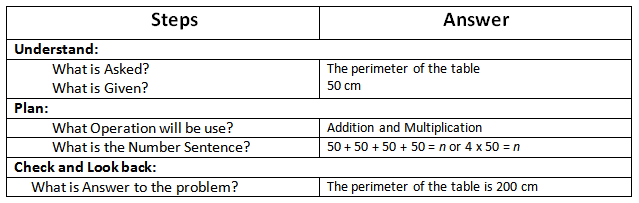
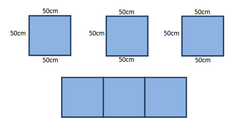

Explore and Discover!
Explore and Discover!
A. One side of a square working table measures 50 cm. Find its perimeter.
B. Using the perimeter of the table above, how many sticks 10 m long are needed to get the perimeter?
C. Using the given in letter A, if three tables are places end-to-end, what will be the perimeter of the new table formed?
From this you can say that the perimeter of the long table formed is 400 cm.
Let's Practice!A. Read each problem. Then, answer the questions that follow.
A handkerchief measures 30 cm long and 25 cm wide. Jayne wants to put lace around it. How many centimeters of lace will she buy to decorate its sides?
What is asked? How long of lace will she buy to decorate its side.
What are the given facts? 30 cm long and 25 cm wide.
What is the process needed? Addition.
What is the number sentence? 30 + 30 + 25 +25 = n
What is the answer? She needs to buy 110 cm of lace.
Lorena’s flower garden has a length of 12 m and a width of 6m. Find the perimeter
What is asked? The perimeter of flower garden.
What are the given facts? 12m long and 6m wide.
What is the process needed? Addition.
What is the number sentence? 12 + 12 + 6 + 6 = n
What is the answer? The perimeter of flower garden is 36 cm.